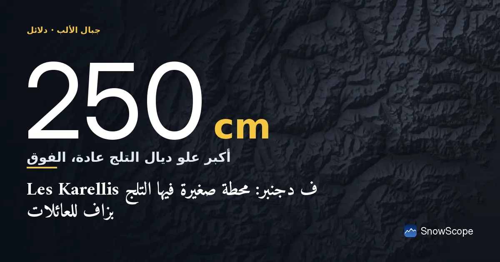

Les Karellis ف دجنبر: محطة صغيرة فيها التلج بزاف للعائلات
Les Karellis فدجنبر اختيار هادئ للوالدين اللي بغاو التلج المضمون بلا ما يخلصو غالي. هاد المحطة ففالي ديال Maurienne صغيرة على جيرانها، ولكن جاية فالعلو اللي كيخلي التزلج مزيان فبداية السيزون. يلا كنتي كتخطط لرحلة عائلية، التشكيلة ديال العلو ديال التلج فـ 1550 م والباسات ديال التلفريك اللي فالمتناول كيخليوها بديل عملي للمحطات الكبار ديال التزلج.
شوف توقعات التلج مباشرة ديال Les Karellis فالتطبيق ديال SnowScopeالعلو ديال التلج، التنبيهات والخريطة 3D، فابور.
محطة صغيرة بعلو عالي
Les Karellis هي محطة مجمعة وساهلة للعائلات باش يتحركو فيها. المنطقة ديال التزلج المحددة فيها 45 كم ديال البيست و14 تلفريك، وهادشي كافي لواحد السيمانة ديال التزلج مع الدراري. المحطة كتبدا من 1550 م وكتطلع حتى لـ 2484 م، كتعطي علو إجمالي ديال 934 م. حيت القرية فـ 1550 م، غالبا كيكون عندك التلج نيشان فالسفح ديال التلفريك.
التاريخ ديال التلج ديالنا فـ 46 شتوات اللي فاتو كيبين بلي العلو ديال التلج موثوق بزاف لمحطة بهاد الحجم. العلو المعتاد فدجنبر فالقاعدة هو 37 سم. فشي شتا قاصحة، اللي كتوقع تقريبا فـ 1 من كل 10 شتوات، العلو يقدر يوصل لـ 73 سم. حتى فشي شتا قليلة، اللي كتوقع حتى هي فـ 1 من كل 10 شتوات، القاعدة غالبا كيكون فيها على الأقل 16 سم ديال التلج. هاد العلو ميزة كبيرة فاش كيكونوا محطات خرين هابطين مازال كيتسناو التغطية ديال التلج.

التلج ديال دجنبر سيمانة بسيمانة
العلو ديال التلج فـ Les Karellis كيتحسن بزاف مع الوقت فدجنبر. فالسيمانة الأولى ديال الشهر، من 1 لـ 7 دجنبر، القاعدة كيكون فيها 30 سم أو كتر فـ 43 % ديال الشتوات اللي فاتو. فالسيمانة ديال 22 لـ 28 دجنبر، هاد الاحتمال كيطلع لـ 76 %. يلا كنتي كتقلب على تغطية غارقة ديال 50 سم أو كتر فالقاعدة، هادشي كيوقع فـ 50 % ديال الشتوات اللي فاتو فالسيمانة اللخرة ديال الشهر.
فالجهة الفوقانية ديال الجبل، الأرقام أحسن للزوار اللي كيجيو بكري. فوسط الجبل (2017 م)، العلو المعتاد فـ 15 دجنبر هو 63 سم. فـ 98 % ديال الشتوات اللي فاتو، كيكون على الأقل 30 سم ديال التلج فهاد العلو فخلال النص التاني ديال الشهر. فالفوق ديال التلفريك (2484 م)، العلو المعتاد هو 98 سم فـ 15 دجنبر. فتقريبا 9 ديال الشتوات من 10، الفوق ديال الجبل كيكون فيه 50 سم أو كتر ديال التلج من السيمانة ديال 15 لـ 21 دجنبر.
شحال كتخلص العائلة على التلفريك
واحد من الأسباب الرئيسية علاش كنشوفو Les Karellis هو الثمن. للسيزون ديال الشتا 2026-27، باس ديال نهار واحد للكبار (18+) كيدير 36,00 EUR. هادشي قليل بزاف لمحطة فيها 934 م ديال العلو. يلا حجزتي إقامة طويلة، باس ديال 6 أيام للكبار كيدير 191,00 EUR. هاد الأثمنة مراجعة من السيت الرسمي وكتعاون العائلة باش تخلي التكلفة الإجمالية ديال الرحلة ناقصة.
المحطة مصممة باش تكون ساهلة وفالمتناول. بـ 14 تلفريك كيخدمو 45 كم ديال البيست، ما كتخلصش على شبكة كبيرة ديال مئات الكيلومترات اللي الدراري الصغار يقدروا ما يستعملوهاش كاع. بلاصتها، كتخلص على منطقة عملية فيها تلفريك عالي فـ 2484 م، باش تضمن بلي تقدر تلقى تلج مزيان واخا يكون المستوى ديال القرية قليل.
كيفاش كتقارن مع Valloire-Valmeinier
مفيد تقارن Les Karellis مع Valloire-Valmeinier، اللي هي جارة كبر منها بزاف. Valloire-Valmeinier فيها 131 كم ديال البيست و34 تلفريك، ولكن هي غالية كتر. باس ديال 6 أيام Galibier-Thabor للكبار تما كيدير 278,50 EUR، وباس ديال نهار واحد للكبار كيدير 54,90 EUR. واخا Valloire-Valmeinier كطلع لعلو كبر فـ 2738 م، القاعدة ديالها هابطة فـ 1406 م.
فاش كنشوفو التلج فوسط الجبل، بجوجهم كيتشابهو بزاف. فـ 2017 م فـ Les Karellis، العلو المعتاد فدجنبر هو 63 سم. فـ Valloire-Valmeinier فـ 2072 م، هو 66 سم. بجوج المحطات عندهم احتمال ديال 98 % باش يكون عندهم 30 سم أو كتر فوسط الجبل فالنص التاني ديال دجنبر. للعائلة، Les Karellis كتوفر تقريبا نفس الموثوقية ديال التلج بحال جارتها الكبيرة ولكن بثمن قل بزاف.
شنو خاصك ترد ليه البال قبل الحجز
التاريخ ديال التلج ديالنا كيبين بلي دجنبر فـ Les Karellis كيولي فيه التلج كتر مع الوقت. فوسط الجبل، المعدل ديال دجنبر كان 55 سم فـ 15 شتوات اللولين (1980-81 لـ 1994-95). فـ 15 شتوات اللخرين (2011-12 لـ 2025-26)، هاد المعدل طلع لـ 64 سم. هاد الاتجاه علامة مزيانة للناس اللي كيخططو لرحلة فدجنبر 2026.
فـ 13 نونبر 2026، السيزون بادية مزيان. حاليا كاين 0 سم فالقاعدة و3 سم فالفوق، ولكن 7 أيام الجاية خاص تجيب 32 سم ديال التلج جديد للقاعدة و86 سم للفوق. التوقعات ديال جوج سيمانات لوسط الجبل والفوق كتعطي مجال من 68 سم لـ 104 سم ديال التلج جديد. ديما شوف السيت الرسمي على الباس ديال 6 أيام بـ 191,00 EUR ورد البال للتقارير ديال الجبل فاش تقرب الرحلة ديالك.
نصايح للي كيتزلجو
- حجز الرحلة ديالك للنص التاني ديال دجنبر فاش احتمال ديال قاعدة بـ 30 سم كيطلع لـ 70 % أو كتر.
- بقى فبيست ديال وسط الجبل فـ 2017 م يلا كانت القاعدة قليلة، حيت كاين احتمال ديال 98 % ديال التلج تما بعد 15 دجنبر.
- شري الباس ديال 6 أيام للكبار من السيت الرسمي بـ 191,00 EUR باش تاخد أحسن قيمة.
- شوف النشرة ديال الانهيارات قبل ما تزلج خارج البيست، خصوصا يلا كان العلو فالفوق قريب لـ 98 سم المعتادة.
- قارن الثمن اليومي ديال 36,00 EUR مع المحطات اللي حداك يلا كنتي ناوي تزلج غير شي أيام قليلة.
خرائط أخرى (مواقع خارجية)
المراجع والمصادر
- Les Karellis, official prices 2026-2027 www.leskarellis.com/fr/tarifs-2026-2027-sans-lien
- Valloire, official ski pass shop (Galibier-Thabor), winter 2026-27 skipass.valloire.com/fr/
- SnowScope, December snow at three heights and today's snow map snowscope.app/
على هاد الأرقام
العلو ديال التلج فالمحطات هو أكثر تلج فالجهة الفوقانية فالتاريخ المكتوب؛ هادو تقديرات لمنطقة، ماشي قياس فنقطة وحدة. التوقعات يمكن تتبدل. ديما شوف النشرة الرسمية ديال الانهيارات قبل ما تخرج من البيست.
النشرات الرسمية ديال الانهيارات: Météo-France – Bulletin d'estimation du risque d'avalanche
كيفاش تستاشهد بهاد المقال
للبحث، التعليم ولا الصحافة: الأرقام والرسومات تقدر تعاود تخدم بيهم بحرية تحت CC BY 4.0 مع هاد الاستشهاد.
SnowScope (2026), Les Karellis ف دجنبر: محطة صغيرة فيها التلج بزاف للعائلات, https://snowscope.app/blog/ar/2026/11/les-karellis-small-resort-december-ski-week-price-2026.html, تشاف ف 2026-11-14
SnowScope (Atlas Labs). (2026, November 14). Les Karellis ف دجنبر: محطة صغيرة فيها التلج بزاف للعائلات. SnowScope snow reports. https://snowscope.app/blog/ar/2026/11/les-karellis-small-resort-december-ski-week-price-2026.html
BibTeX
@misc{snowscope2026leskarellissmallresortde,
author = {{SnowScope (Atlas Labs)}},
title = {Les Karellis ف دجنبر: محطة صغيرة فيها التلج بزاف للعائلات},
year = {2026},
month = nov,
howpublished = {\url{https://snowscope.app/blog/ar/2026/11/les-karellis-small-resort-december-ski-week-price-2026.html}},
note = {Published 2026-11-14 13:29 UTC; accessed 2026-11-14}
}· CC BY 4.0 · الطريقة، الداتا والأدوات →
Les Karellis: التلج والحرارة حسب العلو، هاد الشتا مقارنة مع اللي فاتت (الأدوات) →
تابع Les Karellis
فابور: ميساج ملي يجي التلج، والتوقعات كل صباح.